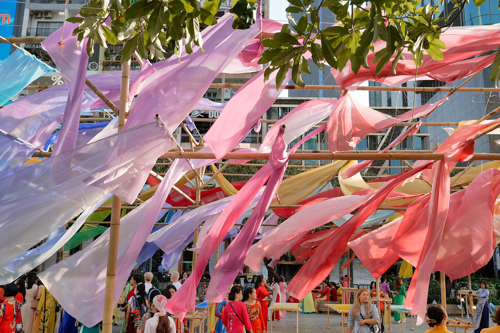
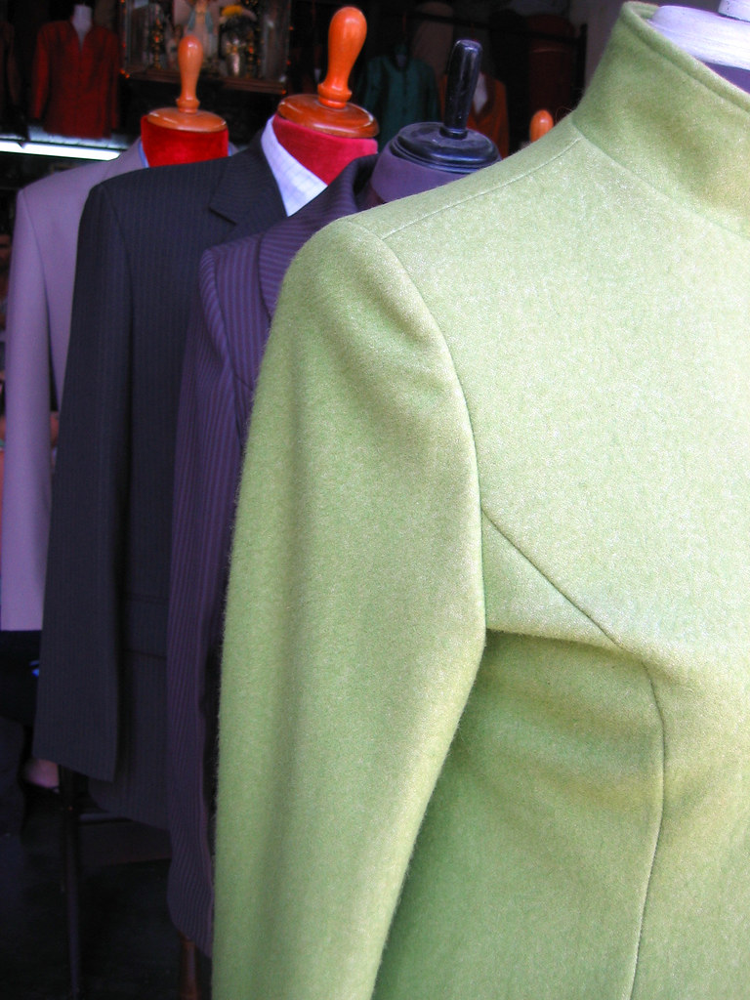

Câu chuyện thương hiệu
Từ chiếc rương áo đến một xưởng may nhỏ
Chúng tôi may áo dài để những nếp xưa của người Việt được mặc tiếp, chứ không chỉ được cất đi.

Cảm hứng từ văn hóa Việt
Mùa sen năm 2016, sau khi bà ngoại mất, Hạnh Dung mở chiếc rương gỗ trong nhà rường ở Phú Hội. Bên trong là mười một tà áo: áo ngũ thân bằng the, áo dài lụa hồng phai, một chiếc áo cưới gấm đỏ đã sờn cổ. Cô mang chúng tới bà Tôn Nữ Thị Lan, người thợ cắt áo dài lâu năm nhất trong xóm, để hỏi cách giữ lại.
Bà Lan không chỉ vá lại. Bà tháo đường may, trải từng thân áo ra bàn và chỉ cho Dung thấy vì sao vạt trước dài hơn vạt sau một đốt tay, vì sao cổ áo Huế cao và mềm. Những buổi chiều ấy trở thành lớp học đầu tiên của An Nam Ký Test.
“Mỗi tà áo cũ là một bản vẽ, chỉ cần người chịu đọc.”
Chúng tôi tìm cảm hứng ở những thứ rất gần: màu ngói men của Đại Nội, đầm sen trước cửa Hiển Nhơn, lụa Nha Xá phơi trên giàn tre, tiếng kéo cắt vải trong những tiệm may ở chợ Đông Ba. Hoa văn được vẽ tay trên lụa, màu nhuộm lấy cảm hứng từ cây lá: vỏ cây bàng, lá chàm, hoa hòe.
Thương hiệu mang tên An Nam như một lời nhắc về gốc gác. Chữ Ký trong tiếng Hán Việt là ghi nhớ: mỗi tà áo may ra là một lần ghi lại dáng người Việt hôm nay, bằng ngôn ngữ của những người thợ hôm qua.

Từ tấm lụa đến tà áo

-
01
Chọn lụa
Bạn chạm tay vào từng loại lụa, lãnh, gấm tại xưởng. Chúng tôi gợi ý chất vải theo dịp mặc và khí hậu nơi bạn sống.
-
02
Đo dáng
Hai mươi sáu số đo, ghi tay vào sổ riêng của bạn. Lần may sau chỉ cần đo lại vài chỗ.
-
03
Cắt và vẽ
Thợ cắt rập theo số đo, họa sĩ vẽ hoặc thêu hoa văn trực tiếp lên thân áo trước khi ráp.
-
04
Thử và hoàn thiện
Ba lần thử để chỉnh eo, tà và cổ. Áo hoàn thiện được gấp trong giấy dó, kèm sổ hướng dẫn giữ lụa.
- Số đo cho một tà áo
- 26
- Lần thử trước khi giao
- 3
- Ngày may trung bình
- 14
Những mốc đã đi qua
-
2016
Mở rương áo của bà, học cắt áo dài với bà Tôn Nữ Thị Lan trong căn nhà rường ở Phú Hội.
-
2018
Bộ sưu tập đầu tiên, Cố Đô, gồm mười hai mẫu áo dài cổ cao may từ lụa Nha Xá.
-
2021
Bắt đầu cộng tác với hai hộ dệt ở Nha Xá và Vạn Phúc, đặt dệt riêng khổ lụa cho xưởng.
-
2024
Mở phòng đo và thử áo trên đường Chi Lăng, nhận may theo lịch hẹn.
-
2026
Ra mắt Sen Hạ và Hỷ Sự, hai bộ sưu tập cho mùa hè và mùa cưới.
Ghé xưởng, chạm vào lụa.
Một buổi đo kéo dài khoảng một giờ, có trà và các mẫu lụa để bạn chọn.
Hẹn may đo